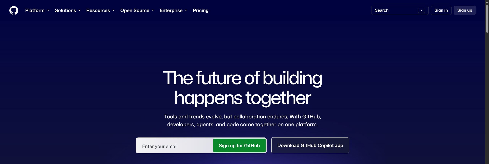
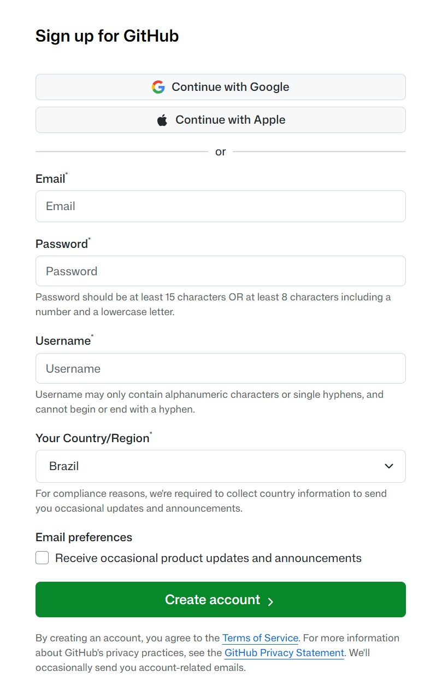
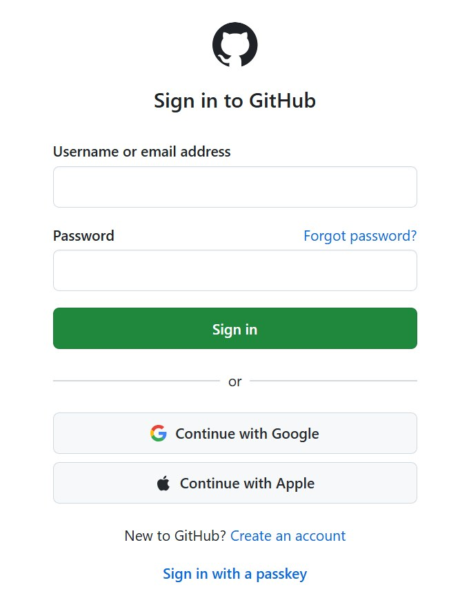

Git e GitHub · Tempo estimado: 5 minutos
O GitHub é o site onde guardamos nossos projetos na internet (como um "Google Drive" para código). Vamos precisar de uma conta gratuita para as próximas aulas.
Abra o navegador e entre em github.com. No canto superior direito, clique em Sign up (ou digite seu e-mail no campo do meio e clique em Sign up for GitHub).

Na página Create your free account, preencha:
| Campo | O que colocar |
|---|---|
| Seu e-mail (o mesmo que você vai abrir para confirmar) | |
| Password | Mínimo 15 caracteres, ou 8 com número e letra minúscula |
| Username | Seu nome de usuário público. Só letras, números e hífen simples |
| Country/Region | Brazil |
| Email preferences | Opcional. Pode deixar desmarcado |
github.com/seu-usuario) e no seu portfólio. Prefira algo simples e apropriado, como nome-sobrenome.
Clique no botão verde Create account. Em seguida o GitHub vai pedir:
Depois disso, o GitHub faz algumas perguntas de personalização. Pode pular todas.
Para ter certeza de que deu certo, saia da conta e entre de novo em github.com/login.

github.com/login